EAGLE-3：通过训练时测试扩展大语言模型推理加速
Yuhui Li1,2，Fangyun Wei3，Chao Zhang2，Hongyang Zhang1,4
1滑铁卢大学 2北京大学 3Microsoft Research 4Vector Institute
yuhui.li@stu.pku.edu.cn，fawe@microsoft.com
c.zhang@pku.edu.cn，hongyang.zhang@uwaterloo.ca
摘要
现代 LLM 的顺序生成特性使其成本高、速度慢，而 speculative sampling 已被证明是解决这一问题的有效方案。EAGLE 等方法在特征层面进行自回归，复用目标模型顶层特征，取得优于常规 speculative sampling 的效果。LLM 社区日益重视扩大训练数据，在不增加推理成本的情况下提高模型智能。然而，我们观察到，扩大数据量只能为 EAGLE 带来有限改善。我们发现，这一局限源自 EAGLE 的特征预测约束。本文提出 EAGLE-3，通过一种名为“训练时测试”（training-time test）的技术，放弃特征预测、改为直接预测 token，并以多层特征融合取代对顶层特征的依赖。这些改进显著提升性能，使草稿模型能够充分受益于训练数据扩展。我们的实验包含聊天模型与推理模型，并在五项任务上评估。结果表明，EAGLE-3 的加速比最高达 6.5 倍，相对 EAGLE-2 约提升 1.4 倍。在 SGLang 框架中，EAGLE-3 在 batch size 为 64 时实现了 1.38 倍的吞吐量。代码见 https://github.com/SafeAILab/EAGLE。
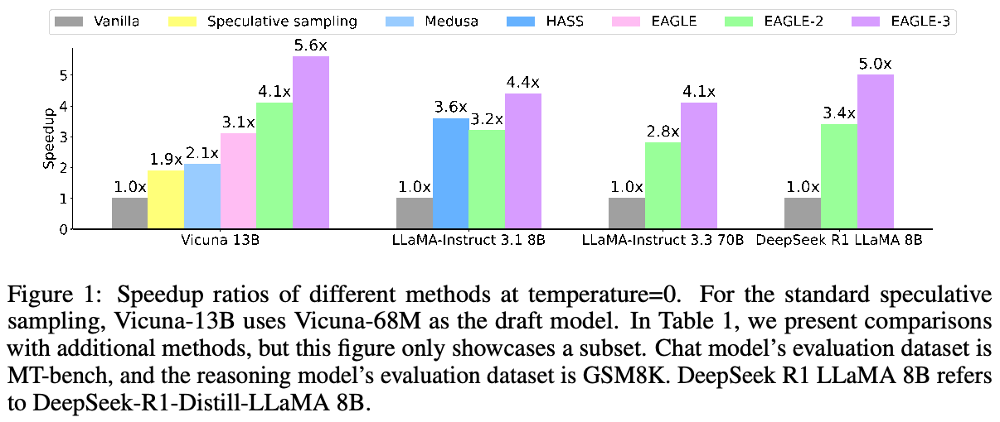
1 引言
现代大语言模型（LLM）正在应用于更多领域，其能力提升由模型参数规模扩张推动，一些 LLM 的参数量如今已超过数千亿。在自回归生成中，每个 token 都需要访问全部模型参数，导致 LLM 推理缓慢而昂贵。（本段原文跨页，已接续。）
第 39 届神经信息处理系统大会（NeurIPS 2025）。
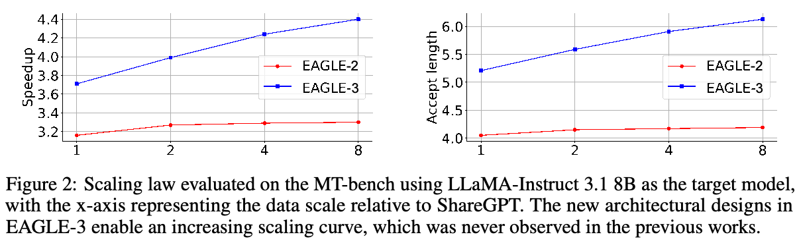
（本页开头关于参数规模及自回归访问开销的跨页段落已接续至第 1 页。）
近期，test-time scaling up 引起广泛关注。ChatGPT o1 和 DeepSeek-R1 [1] 等模型在作答前进行深思熟虑的推理，以更长推理时间为代价，推动 LLM 能力边界。然而，这些模型往往需要冗长的推理过程，成本极高，而响应时间增加也严重影响用户满意度。这些推理模型显著提高了推理成本在整个 LLM 流程中的占比，促使研究者探索更便宜、更快速的推理优化方法。
Speculative sampling 方法通过部分并行化生成过程降低 LLM 延迟。这些方法快速生成草稿 token，再并行验证，从而在一次前向计算中产生多个 token，显著降低推理延迟。作为先进的 speculative sampling 方法，EAGLE [2] 利用目标模型顶层特征（即 LM head 之前的表示）进行下一特征预测，从而完成 LLM decoding。如图 3 第一个框所示，EAGLE 通过将所有先前特征 \(f_1,\ldots,f_t\) 输入目标模型，预测下一特征 \(\hat f_{t+1}\)，以训练数据的特征 \(f_{t+1}\) 为标签来训练草稿模型。在测试阶段（第二个框），EAGLE 自回归预测下一特征 \(\hat f\)，再用目标模型的 LM head 得到草稿 token \(\hat t\)。借助目标模型的丰富信息，EAGLE 相比常规 speculative sampling 显著提升加速效果。HASS [3] 和 Falcon [4] 等后续方法也采用根据当前特征序列预测下一特征的方案。
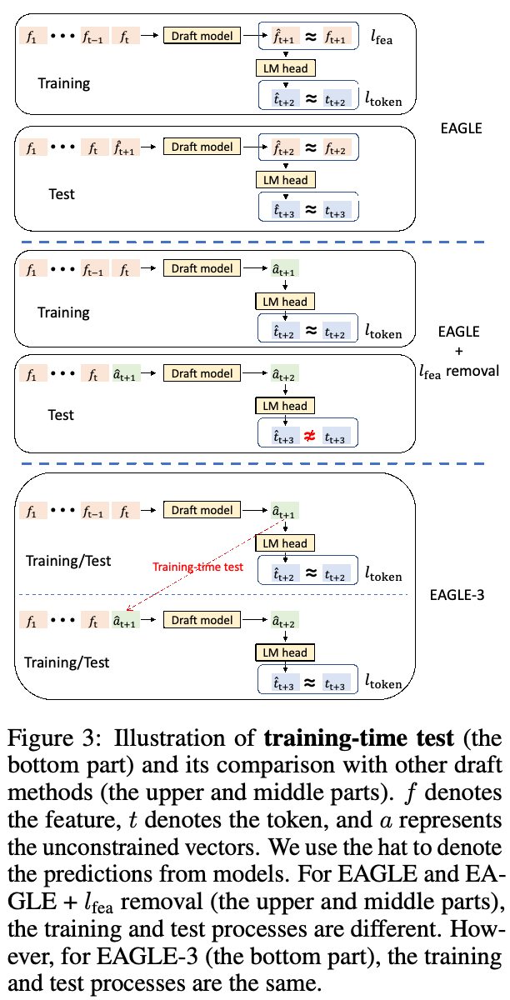
近期 LLM 越来越依赖更大的训练数据集来取得更好性能。例如，LLaMA 系列的 7B（8B）规模模型中，LLaMA 1 [5]、LLaMA 2 [6] 和 LLaMA 3 [7] 分别使用 1T、2T 和 15T token 的训练数据，在模型架构和推理成本基本不变的情况下，各项指标显著改善。同样，我们希望通过增加训练数据，提高 EAGLE 的接受率和加速比。不幸的是，我们观察到，增加训练数据为 EAGLE 带来的收益有限。我们分析这一现象背后的原因。如图 3 上半部分所示，在测试（接下页）
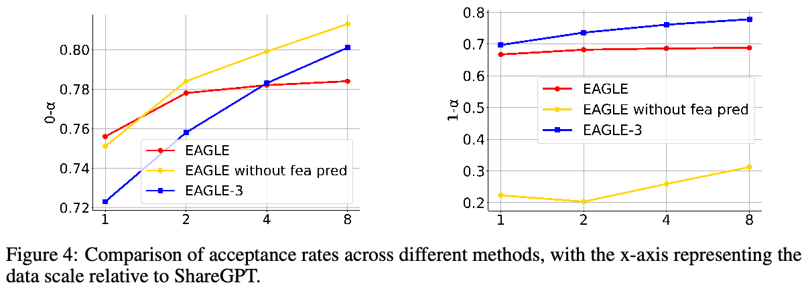
（接上页）阶段，EAGLE 在特征层面进行自回归预测（草稿模型的输入与输出都带有帽子符号），先预测下一特征，再将该特征送入目标模型的 LM head，得到 token 分布。在训练阶段，EAGLE 的损失函数包含两部分：特征预测损失 \(l_{\mathrm{fea}}\) 和 token 预测损失 \(l_{\mathrm{token}}\)。得益于特征预测损失，训练后的草稿模型（输入不带帽子符号，输出带帽子符号）能够适应测试情形，获得多步预测能力。然而，当最终目标是预测 token 时，特征预测可视为一项额外约束，限制草稿模型的表达能力，使其难以受益于数据增长。移除特征约束并扩大训练数据后（图 3 中间部分），如图 4 所示，第一个草稿 token 的接受率 \(0\text{-}\alpha\) 显著提高。但是，训练阶段草稿模型的输出 \(\hat a_{t+1}\) 与真实值 \(f_{t+1}\) 相差很远，导致测试阶段的输入序列 \(f_1,f_2,\ldots,f_t,\hat a_{t+1}\) 严重偏离训练分布，使第二个草稿 token 的接受率 \(1\text{-}\alpha\) 很低，如图 4 所示。我们可以在训练过程中将输出 \(\hat a_{t+1}\) 重新送回草稿模型的输入（图 3 底部），类似自回归推理，从而解决这一问题。采用这种方法，扩大训练数据的收益更加明显。我们将这一技术称为训练时测试。
EAGLE 和 Medusa [8] 等 speculative sampling 方法会复用目标模型的顶层特征，即紧邻 LM head 之前的特征。对于权重矩阵满秩的 LM head，下一 token 的 logits 所对应的顶层特征是唯一的，从而保证这些特征所含信息与下一 token 的 logits 直接对应。然而，仅根据本质上局限于下一 token 的顶层特征，预测下下个 token，是一项重大挑战。幸运的是，上述训练时测试技术使我们能够采用中间层特征，而非仅依赖顶层，因为训练中已移除特征预测损失 \(l_{\mathrm{fea}}\)。
本文提出 EAGLE 的增强版本 EAGLE-3，实现显著加速：
- 草稿模型的训练时测试架构：我们移除特征预测约束，直接预测 token，同时在训练期间模拟多步生成。直接预测 token 使草稿模型的输入完全灵活。我们不再仅复用顶层特征，而是整合并利用目标模型低层、中层和高层特征，捕获不同层丰富的语义信息。
- LLM 推理加速的新 scaling law：采用新架构后，我们观察到，增加草稿模型的训练数据量，使 EAGLE-3 加速比相应增长。如图 2 所示，原始 EAGLE 架构没有表现出这一 scaling 行为。
- 更好的推理加速：EAGLE-3 使用约为 EAGLE 8 倍的数据训练，在 batch size 为 1 时，相比 EAGLE-2 实现 1.4 倍的延迟加速。通常认为，大 batch size 下 speculative sampling 会降低吞吐量。然而，在生产级框架 SGLang [9] 中，EAGLE-3 在 batch size 为 64 时将吞吐量提高 38%。我们预期，更大的数据规模会进一步提高加速比。
2 预备知识
2.1 Speculative Sampling
Speculative sampling [10, 11, 12, 13] 是一种无损 LLM 加速技术，交替执行草稿与验证阶段，分别对应低成本草稿生成和并行化验证。我们用 \(t_i\) 表示第 \(i\) 个 token，用 \(T_{a:b}\) 表示 token 序列 \(t_a,t_{a+1},\ldots,t_b\)。以前缀 \(T_{1:j}\) 为输入，speculative sampling 的两个阶段如下。
在草稿阶段，speculative sampling 使用草稿模型（与目标模型同系列的较小版本），自回归生成 \(k\) 个 token，组成草稿 \(\hat T_{j+1:j+k}\)，同时记录每个 token 的概率 \(\hat p\)。
在验证阶段，speculative sampling 调用目标模型评估草稿 \(\hat T_{j+1:j+k}\)，并记录其概率 \(p\)。随后从前到后依次判断是否接受草稿 token。对于 token \(\hat t_{j+i}\)，接受概率为 \(\min(1,p_{j+i}(\hat t_{j+i})/\hat p_{j+i}(\hat t_{j+i}))\)。如果接受该 token，便继续处理下一个 token。否则，从分布 \(\operatorname{norm}(\max(0,p_{j+i}-\hat p_{j+i}))\) 中采样一个 token 替换 \(\hat t_{j+i}\)，并丢弃草稿中剩余 token。文献 [10] 附录 A.1 证明，speculative sampling 与常规自回归 decoding 的分布一致。
2.2 EAGLE 与 EAGLE-2
容量有限的草稿模型难以精确近似大型目标模型。EAGLE 将目标模型顶层特征作为额外信息，在特征层面进行自回归，简化草稿生成过程。EAGLE 在特征层面自回归，再用目标模型的 LM head 得到草稿 token。由于 token 层面的采样结果被隐藏，特征层面自回归引入了不确定性。EAGLE 通过将前一时间步的 token 序列（即采样结果）送入草稿模型，解决这一问题。不同于常规 speculative sampling 的链式草稿，EAGLE 在同一位置生成多个草稿 token，从而形成树形草稿。在验证阶段，EAGLE 用 tree attention 并行验证草稿树。有趣的是，EAGLE 启发了 DeepSeek-V3 [14] 预训练中使用的 multi-token prediction 技术，后者又启发了 EAGLE-3 的新架构设计。
EAGLE [2]、Medusa [8] 等方法使用树形草稿，树结构预先定义、静态且不依赖上下文。草稿生成的难度与上下文密切相关，静态草稿树可能浪费资源。EAGLE-2 [15] 用草稿模型置信度近似接受率，在此基础上动态生成草稿树，并在草稿阶段末尾剪枝。EAGLE-3 也采用 EAGLE-2 提出的上下文感知动态草稿树。
3 EAGLE-3
本节详细描述 EAGLE-3 的实现。
3.1 推理流程
与其他 speculative sampling 方法一致，EAGLE-3 交替执行草稿与验证阶段。EAGLE-3 与 EAGLE 的区别在草稿阶段，我们通过图 5 的例子介绍。考虑前缀“How can”。在 prefill 阶段或上一轮验证阶段，目标模型进行一次前向计算，生成下一个 token“I”。我们记录目标模型前向计算中的低层、中层和高层特征序列，分别记为 \(l\)、\(m\) 和 \(h\)。将 \(k\) 维向量 \(l\)、\(m\)、\(h\) 拼接为 \(3k\) 维向量，再通过全连接（FC）层降至 \(k\) 维，得到融合不同层信息的特征 \(g\)。这里，\(k\) 为目标模型的隐藏维度。
我们的目标是生成以前缀“How can I”开头的草稿 token 序列。如果仅输入 \(g_{\mathrm{how}}\) 和 \(g_{\mathrm{can}}\)，草稿模型无法获知随机采样过程。因此，与 EAGLE [2] 类似，（接下页）
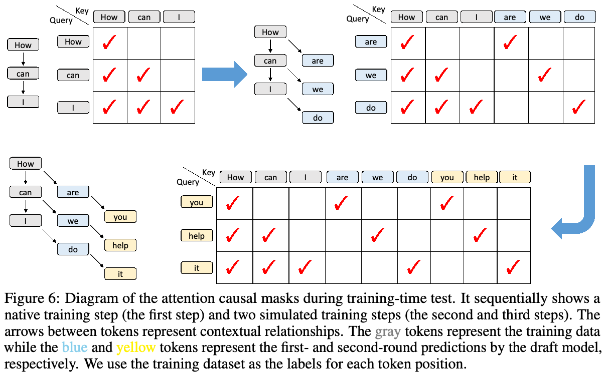
（接上页）我们引入采样 token“I”的 embedding \(e_{\mathrm I}\)。拼接后的向量先经过 FC 层降至 \(k\) 维，再输入单个 decoder 层，产生输出 \(a\)。最后，将 \(a_{\mathrm I}\) 输入 LM head 并采样，得到草稿 token“do”。
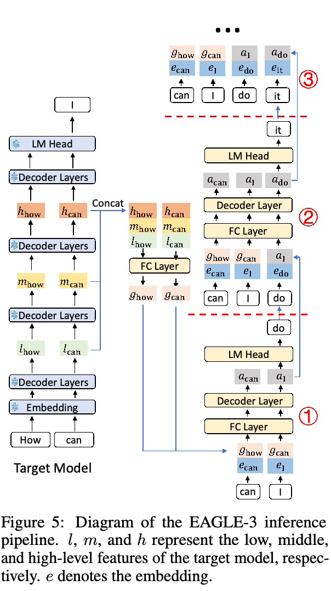
在步骤 1 中，前缀为“How can”，我们复用目标模型的 \(g_{\mathrm{how}}\) 和 \(g_{\mathrm{can}}\)。在步骤 2 中，前缀变为“How can I”。理想情况下，应复用目标模型的 \(g_{\mathrm{how}}\)、\(g_{\mathrm{can}}\) 和 \(g_{\mathrm I}\)。但这不可能，因为 token“I”尚未经过目标模型检查，无法获得 \(g_{\mathrm I}\)。我们改用草稿模型上一步的输出 \(a_{\mathrm I}\) 替代 \(g_{\mathrm I}\)，并将 \(a_{\mathrm I}\) 与采样结果“do”的 embedding \(e_{\mathrm{do}}\) 拼接，作为步骤 1 中草稿模型的输入。〔译注：本句原文写作“Step 1”，上下文正在描述步骤 2；此处保留原文。〕
在步骤 3 中，同样无法获得 \(g_{\mathrm{do}}\)，因此用 \(a_{\mathrm{do}}\) 替代，并将 \(a_{\mathrm{do}}\) 与 \(e_{\mathrm{it}}\) 拼接，作为草稿模型输入。后续步骤采用相同方式。
3.2 草稿模型训练
EAGLE 草稿模型的输入是目标模型的顶层特征 \(f_1,f_2,\ldots,f_t\)，或至少近似这些特征。相比之下，EAGLE-3 草稿模型的输入可能包含目标模型的特征 \(g_1,g_2,\ldots,g_t\)，也可能包含草稿模型的输出 \(a_{t+1},a_{t+2},\ldots,a_{t+j}\)。因此，需要训练草稿模型适应不同输入。在训练期间，我们执行测试步骤，生成 \(a\) 后将其反馈至草稿模型，继续训练。
EAGLE-3 草稿模型的核心是一个 Transformer decoder 层。除 self-attention 操作外，其他组件都不与上下文交互，因此训练或测试期间不需要进一步修改。唯一需要略作修改的组件是 self-attention，下文详细介绍。（本段原文跨页，已接续。）
（本页开头关于 self-attention 修改的跨页段落已接续至第 5 页。）
虽然实际输入由特征组成，为清楚起见，我们用 token 作为输入描述过程。如图 6 所示，原始训练数据是长度为 3 的序列“How can I”，上下文具有正常的顺序依赖。因此，attention mask 是标准的下三角矩阵。三个位置的输出分别为“are”“we”和“do”，它们与“how”“can”“I”之间形成树形上下文关系。因此，将“are”“we”“do”输入步骤 2 时，attention mask 需要相应调整，如图 6 右上角所示。除以原始训练数据作为 key 的部分之外，所有 attention mask 都是对角矩阵。此时使用矩阵乘法会造成大量计算浪费，因此可以用向量点积，仅计算对应位置的 attention 分数。
HASS [3] 和 EAGLE-3 都对 attention 机制做了类似修改，以在训练期间模拟测试过程，但这并非 EAGLE-3 的主要重点。两者的动机、方法和结果显著不同。HASS 的动机是缓解 EAGLE 特征预测不准确造成的误差积累。HASS 仍进行特征预测，包含特征预测损失 \(l_{\mathrm{fea}}\)，且草稿模型的输入必须是顶层特征。相比之下，EAGLE-3 的动机是移除不必要的约束，增强模型表达能力。EAGLE-3 不再要求草稿模型输出拟合目标模型顶层特征，从而避免误差积累。移除特征预测后，EAGLE-3 的输入完全自由，改为融合不同层语义信息的特征。移除特征预测损失，还使我们发现了此前从未发现的推理加速新 scaling law。图 1 和表 1 也展示了 EAGLE-3 和 HASS 的加速效果，EAGLE-3 显著更优。
4 实验
模型。我们在开源聊天模型与推理模型上进行实验，包括 Vicuna 13B [16]、LLaMA-Instruct 3.1 8B、LLaMA-Instruct 3.3 70B [7] 和 DeepSeek-R1-Distill-LLaMA 8B [17]。受 GPU 限制，我们无法在超过 70B 的模型上测试 EAGLE-3。
草稿模型。与 EAGLE、EAGLE-2 相同，EAGLE-3 的草稿模型由单个 transformer 层组成。因此，EAGLE、EAGLE-2 和 EAGLE-3 的草稿模型规模几乎相同。
任务。遵循 EAGLE [2] 和 Spec-Bench [18]，我们评估五项任务，全部任务使用相同权重，不针对各任务微调。对于多轮对话、代码生成、数学推理、指令遵循和摘要，我们分别选择 MT-bench [19]、HumanEval [20]、GSM8K [21]、Alpaca [22] 和 CNN/Daily Mail [23] 数据集。
指标。EAGLE-3 不修改目标模型权重，并采用严格的 speculative sampling 接受条件，确保性能无损。因此，我们不评估生成质量，而使用以下指标评估加速性能：
- 加速比：实际测试中相对于常规自回归 decoding 的加速比。
- 平均接受长度 \(\tau\)：每个草稿—验证周期生成的平均 token 数，对应草稿中被接受的 token 数。
- 接受率 \(n\text{-}\alpha\)：被接受的草稿 token 比例，直接反映草稿模型对目标模型的近似程度。遵循 EAGLE 的设置，测试接受率时使用链式草稿而非树形草稿。EAGLE 存在误差积累，即草稿模型的输入可能是自身估计值，而非目标模型的精确值。因此，EAGLE 用 \(n\text{-}\alpha\) 表示输入包含 \(n\) 个估计特征、且此前估计 token 均被目标模型接受时的接受率。换言之，即输入为 \(f_1,f_2,\ldots,f_i,\hat f_{i+1},\ldots,\hat f_{i+n}\) 时的接受率，其中 \(f\) 为精确值，\(\hat f\) 为草稿模型估计值。类似地，我们用 \(n\text{-}\alpha\) 表示 EAGLE-3 输入包含 \(n\) 个自身预测值 \(a\) 时的接受率，即输入为 \(g_1,g_2,\ldots,g_i,a_{i+1},\ldots,a_{i+n}\) 时的接受率，其中 \(g\) 为来自目标模型的融合特征。
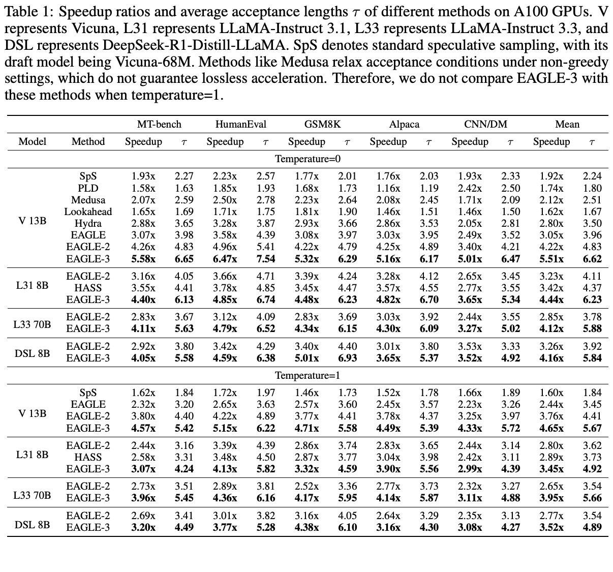
实现。我们使用 AdamW 优化器，\((\beta_1,\beta_2)\) 设为 (0.9, 0.95)，gradient 裁剪阈值为 0.5。学习率设为 5e-5。训练时测试期间模拟 5 步。我们使用 ShareGPT 和 UltraChat-200K [24] 作为训练数据，分别包含约 68K 和 464K 条数据。我们调用目标模型生成响应，而非使用固定数据集。对于推理模型 DeepSeek-R1-Distill-LLaMA 8B，我们还使用 OpenThoughts-114k-math 数据集训练。70B 模型的 EAGLE-3 头使用 16 块 A100 GPU，训练两周。如无特别说明，70B 模型使用 A100 GPU 测试，其他模型使用 RTX 3090。加速同一目标模型的所有方法均采用完全相同的测试环境。
比较。我们以常规自回归 decoding 为基线，作为加速比的基准（1.00 倍）。比较的近期无损 speculative sampling 方法包括标准 speculative sampling [10, 11, 25]、PLD [26]、Medusa [8]、Lookahead [27]、Hydra [28]、HASS [3]、EAGLE [2] 和 EAGLE-2 [15]。
4.1 有效性
图 1 和表 1 展示了 EAGLE-3 的加速性能。在所有任务和目标模型上，EAGLE-3 都取得最高加速比和平均接受长度。相比常规自回归生成，EAGLE-3 提供约 3.0–6.5 倍加速，相对 EAGLE-2 提升 20%–40%。不同任务影响草稿模型接受率，因此平均接受长度和加速比均依赖任务。代码生成任务中存在大量固定模板，最容易生成草稿，因此 EAGLE-3 在 HumanEval 上表现最佳，加速比最高达 6.5 倍，平均接受长度最高达 7.5。DeepSeek-R1-Distill-LLaMA 8B 是一个例外，在数学推理数据集 GSM8K 上加速比最高。这可能是因为我们使用 OpenThoughts-114k-math 数据集训练该模型的草稿模型。（本段原文跨页，已接续。）
（本页开头关于 DeepSeek-R1-Distill-LLaMA 8B 在 GSM8K 上加速的跨页段落已接续至第 7 页。）
图 7 展示了以 LLaMA-Instruct 3.1 8B 为目标模型时，EAGLE 与 EAGLE-3 在 MT-bench 上的接受率。EAGLE-3 的接受率显著高于 EAGLE。随着来自草稿模型自身的输入增多，EAGLE 的接受率显著下降，而 EAGLE-3 的接受率几乎不变，表明训练时测试有效。
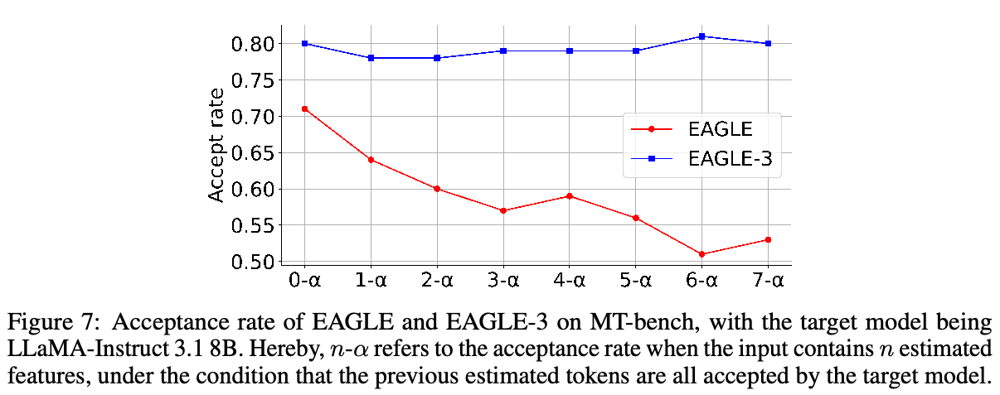
4.2 消融研究
EAGLE-3 的改进主要来自三方面：第一，移除特征回归约束；第二，从仅复用顶层特征改为复用低层、中层和高层特征的混合；第三，增加训练数据。我们以 LLaMA-Instruct 3.1 8B 为目标模型，在 MT-bench 上开展消融研究。表 2 的结果表明，EAGLE-3 的第一、第二项改进显著提高接受长度和加速比，证明其设计合理。图 2 展示了加速比如何随训练数据量增长。EAGLE-3 的新架构设计带来了此前工作从未观察到的上升 scaling 曲线。
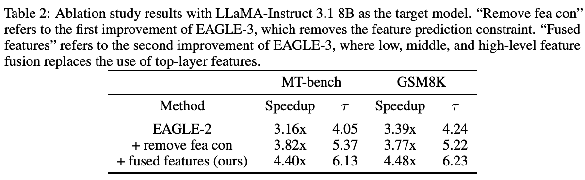
4.3 SGLang 中的 EAGLE-3
Speculative sampling 算法利用冗余计算能力，减少内存访问，降低受内存带宽限制的 decoding 延迟。随着 batch size 增大，这种冗余减少，使 speculative sampling 的效果下降。在高度优化的生产级框架中，提高效率更具挑战性。表 3 评估了 SGLang v0.4.4 环境 [9] 下，单块 H100 GPU 上 LLaMA-Instruct 3.1 8B 使用 EAGLE-3 处理大 batch 的性能。这部分实验未使用树结构，链长度设为 3，测试数据集为 MT-Bench。EAGLE 在 batch size 为 24 时降低吞吐量，而 EAGLE-3 在 batch size 为 64 时仍将吞吐量提高 38%。
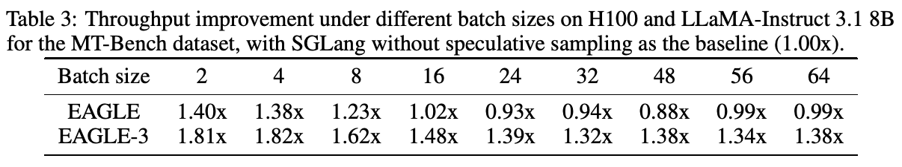
我们还在 H100 上测试了 batch size=1 时 EAGLE-3 的吞吐量，目标模型为 LLaMA-Instruct 3.1 8B，测试数据集为 MT-bench。结果见表 4。
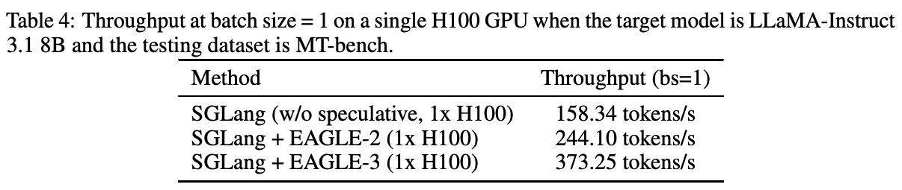
4.4 vLLM 中的 EAGLE-3
我们还基于广泛使用的生产级框架 vLLM [29]，研究了 EAGLE-3 对大 batch size 吞吐量的影响；RTX3090 和 LLaMA-Instruct 3.1 8B 上的结果见表 5。EAGLE 在 batch size 为 24 时表现出最大的吞吐量改善，而 EAGLE-3 在 56 时表现出这一点。这部分实验未使用树结构，最大链长度设为 2，测试数据集为 MT-Bench。
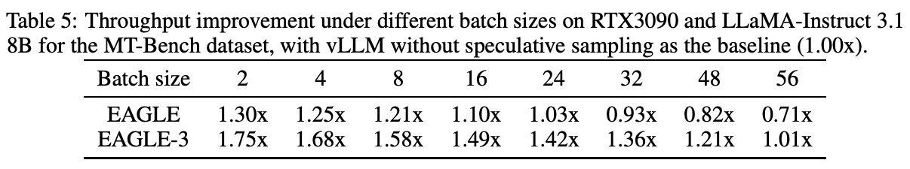
5 相关工作
许多方法被用于加速 LLM 推理，例如量化 [30, 31, 32, 33, 34] 和蒸馏 [35]。这些方法通常存在权衡，需要平衡模型性能与加速收益。
Speculative sampling 使用目标模型验证，确保无损加速。早期 speculative decoding 方法 [36, 37] 在贪心设置中加速生成，而文献 [10, 11] 引入 speculative sampling，将草稿验证框架扩展至非贪心生成。许多后续工作改进了 speculative sampling。EAGLE [2]、EAGLE-2 [15]、Medusa [8] 和 Hydra [28] 复用目标模型特征。在 EAGLE 框架基础上，HASS [3] 在训练时模拟多步草稿过程，缓解 EAGLE 中训练与推理不一致及误差积累问题。GLIDE 和 CAPE [38] 复用目标模型的 KV cache，而 Draft & Verify [48] 等方法 [39, 40, 41, 42, 43, 44, 45, 46, 47] 通过跳层或提前退出来复用目标模型的部分参数。
HASS [3] 与 EAGLE-3 有几项关键区别。首先，HASS 仅使用顶层特征生成草稿，而 EAGLE-3 整合低层、中层和高层特征。其次，HASS 保留 token 损失 \(l_{\mathrm{token}}\)，而 EAGLE-3 将其移除以提高模型容量。〔译注：本句原文写作“token loss \(l_{\mathrm{token}}\)”，与第 3 节所述移除“feature prediction loss \(l_{\mathrm{fea}}\)”不一致；此处保留原文，不代为更正。〕第三，与 HASS 不同，EAGLE-3 展现出清晰的 scaling law 趋势。最后，如图 1 和表 1 所示，EAGLE-3 显著优于 HASS。
6 结论
本文提出 EAGLE-3。在 EAGLE 基础上，EAGLE-3 包含两项关键改进。首先，移除特征预测约束，改为通过训练时测试直接预测草稿 token。其次，用目标模型低层、中层与高层特征的融合，取代仅使用顶层特征，以获得更丰富的信息。通过这些改进，EAGLE-3 持续受益于训练数据增加，最高实现 6.5 倍加速。
致谢
感谢 James Liu、Ke Bao、Yineng Zhang、Lianmin Zheng、Ying Sheng 以及 SGLang 团队的许多其他成员，在 SGLang 环境中评估 EAGLE-3。Hongyang Zhang 获得 NSERC Discovery Grant RGPIN-2022-03215、DGECR-2022-00357，以及 Google Research Scholar Award 支持。
参考文献
[1] Daya Guo, Dejian Yang, Haowei Zhang, Junxiao Song, Ruoyu Zhang, Runxin Xu, Qihao Zhu, Shirong Ma, Peiyi Wang, Xiao Bi, et al. DeepSeek-R1：通过强化学习激励 LLM 的推理能力. arXiv preprint arXiv:2501.12948, 2025.
[2] Yuhui Li, Fangyun Wei, Chao Zhang, and Hongyang Zhang. EAGLE：Speculative sampling 需要重新思考特征不确定性. In International Conference on Machine Learning, 2024.
[3] Lefan Zhang, Xiaodan Wang, Yanhua Huang, and Ruiwen Xu. 学习协调表示以进行 speculative sampling. arXiv preprint arXiv:2408.15766, 2024.
[4] Xiangxiang Gao, Weisheng Xie, Yiwei Xiang, and Feng Ji. Falcon：通过增强的半自回归草稿生成和定制 decoding 树，实现大语言模型的更快并行推理. arXiv preprint arXiv:2412.12639, 2024.
[5] Hugo Touvron, Thibaut Lavril, Gautier Izacard, Xavier Martinet, Marie-Anne Lachaux, Timothée Lacroix, Baptiste Rozière, Naman Goyal, Eric Hambro, Faisal Azhar, et al. LLaMA：开放且高效的基础语言模型. arXiv preprint arXiv:2302.13971, 2023.
[6] Hugo Touvron, Louis Martin, Kevin Stone, Peter Albert, Amjad Almahairi, Yasmine Babaei, Nikolay Bashlykov, Soumya Batra, Prajjwal Bhargava, Shruti Bhosale, et al. LLaMA 2：开放基础模型和经过微调的聊天模型. arXiv preprint arXiv:2307.09288, 2023.
[7] Abhimanyu Dubey, Abhinav Jauhri, Abhinav Pandey, Abhishek Kadian, Ahmad Al-Dahle, Aiesha Letman, Akhil Mathur, Alan Schelten, Amy Yang, Angela Fan, et al. LLaMA 3 模型群. arXiv preprint arXiv:2407.21783, 2024.
[8] Tianle Cai, Yuhong Li, Zhengyang Geng, Hongwu Peng, Jason D. Lee, Deming Chen, and Tri Dao. Medusa：采用多个 decoding 头的简单 LLM 推理加速框架. arXiv preprint arXiv: 2401.10774, 2024.
[9] Lianmin Zheng, Liangsheng Yin, Zhiqiang Xie, Chuyue Livia Sun, Jeff Huang, Cody Hao Yu, Shiyi Cao, Christos Kozyrakis, Ion Stoica, Joseph E Gonzalez, et al. SGLang：高效执行结构化语言模型程序. Advances in Neural Information Processing Systems, 37:62557–62583, 2024.
[10] Yaniv Leviathan, Matan Kalman, and Yossi Matias. 通过 speculative decoding 实现 transformer 快速推理. In International Conference on Machine Learning, pages 19274–19286. PMLR, 2023.
[11] Charlie Chen, Sebastian Borgeaud, Geoffrey Irving, Jean-Baptiste Lespiau, Laurent Sifre, and John Jumper. 通过 speculative sampling 加速大语言模型 decoding. arXiv preprint arXiv:2302.01318, 2023.
[12] Ziteng Sun, Ananda Theertha Suresh, Jae Hun Ro, Ahmad Beirami, Himanshu Jain, and Felix Yu. SpecTr：通过最优传输实现快速 speculative decoding. Advances in Neural Information Processing Systems, 36, 2024.
[13] Ziteng Sun, Jae Hun Ro, Ahmad Beirami, and Ananda Theertha Suresh. 用于加速 speculative decoding 的最优块级草稿验证. arXiv preprint arXiv:2403.10444, 2024.
[14] Aixin Liu, Bei Feng, Bing Xue, Bingxuan Wang, Bochao Wu, Chengda Lu, Chenggang Zhao, Chengqi Deng, Chenyu Zhang, Chong Ruan, et al. DeepSeek-V3 技术报告. arXiv preprint arXiv:2412.19437, 2024.
[15] Yuhui Li, Fangyun Wei, Chao Zhang, and Hongyang Zhang. EAGLE-2：通过动态草稿树加速语言模型推理. In Conference on Empirical Methods in Natural Language Processing, 2024.
[16] Wei-Lin Chiang, Zhuohan Li, Zi Lin, Ying Sheng, Zhanghao Wu, Hao Zhang, Lianmin Zheng, Siyuan Zhuang, Yonghao Zhuang, Joseph E. Gonzalez, Ion Stoica, and Eric P. Xing. Vicuna：以 90%* 的 ChatGPT 质量令 GPT-4 印象深刻的开源聊天机器人, March 2023.
[17] Daya Guo DeepSeek-AI, Dejian Yang, Haowei Zhang, Junxiao Song, Ruoyu Zhang, Runxin Xu, Qihao Zhu, Shirong Ma, Peiyi Wang, Xiao Bi, et al. DeepSeek-R1：通过强化学习激励 LLM 的推理能力. arXiv preprint arXiv:2501.12948, 2025.
[18] Heming Xia, Zhe Yang, Qingxiu Dong, Peiyi Wang, Yongqi Li, Tao Ge, Tianyu Liu, Wenjie Li, and Zhifang Sui. 释放大语言模型推理效率：speculative decoding 全面综述. arXiv preprint arXiv:2401.07851, 2024.
[19] Lianmin Zheng, Wei-Lin Chiang, Ying Sheng, Siyuan Zhuang, Zhanghao Wu, Yonghao Zhuang, Zi Lin, Zhuohan Li, Dacheng Li, Eric Xing, Hao Zhang, Joseph E. Gonzalez, and Ion Stoica. 利用 MT-Bench 和 Chatbot Arena 评判 LLM-as-Judge. arXiv preprint arXiv:2306.05685, 2023.
[20] Mark Chen, Jerry Tworek, Heewoo Jun, Qiming Yuan, Henrique Ponde de Oliveira Pinto, Jared Kaplan, Harri Edwards, Yuri Burda, Nicholas Joseph, Greg Brockman, et al. 评估在代码上训练的大语言模型. arXiv preprint arXiv:2107.03374, 2021.
[21] Karl Cobbe, Vineet Kosaraju, Mohammad Bavarian, Mark Chen, Heewoo Jun, Lukasz Kaiser, Matthias Plappert, Jerry Tworek, Jacob Hilton, Reiichiro Nakano, et al. 训练验证器求解数学文字题. arXiv preprint arXiv:2110.14168, 2021.
[22] Rohan Taori, Ishaan Gulrajani, Tianyi Zhang, Yann Dubois, Xuechen Li, Carlos Guestrin, Percy Liang, and Tatsunori B Hashimoto. Alpaca：强大、可复现的指令遵循模型. Stanford Center for Research on Foundation Models. https://crfm. stanford. edu/2023/03/13/alpaca. html, 3(6):7, 2023.
[23] Ramesh Nallapati, Bowen Zhou, Caglar Gulcehre, Bing Xiang, et al. 使用 sequence-to-sequence RNN 及进一步方法进行抽象式文本摘要. arXiv preprint arXiv:1602.06023, 2016.
[24] Ning Ding, Yulin Chen, Bokai Xu, Yujia Qin, Zhi Zheng, Shengding Hu, Zhiyuan Liu, Maosong Sun, and Bowen Zhou. 通过扩大高质量指令对话规模增强聊天语言模型. arXiv preprint arXiv:2305.14233, 2023.
[25] Joao Gante. 辅助生成：低延迟文本生成的新方向. https://huggingface. co/blog/assisted-generation, 2023.
[26] Apoorv Saxena. Prompt lookup decoding, November 2023.
[27] Yichao Fu, Peter Bailis, Ion Stoica, and Hao Zhang. 使用 Lookahead decoding 打破 LLM 推理的顺序依赖. arXiv preprint arXiv:2402.02057, 2024.
[28] Zachary Ankner, Rishab Parthasarathy, Aniruddha Nrusimha, Christopher Rinard, Jonathan Ragan-Kelley, and William Brandon. Hydra：用于 Medusa decoding 的顺序依赖草稿头. arXiv preprint arXiv:2402.05109, 2024.
[29] Woosuk Kwon, Zhuohan Li, Siyuan Zhuang, Ying Sheng, Lianmin Zheng, Cody Hao Yu, Joseph Gonzalez, Hao Zhang, and Ion Stoica. 通过 PagedAttention 高效管理大语言模型服务的内存. In Symposium on Operating Systems Principles, pages 611–626, 2023.
[30] Itay Hubara, Matthieu Courbariaux, Daniel Soudry, Ran El-Yaniv, and Yoshua Bengio. 量化神经网络：使用低精度权重和激活训练神经网络. journal of machine learning research, 18(187):1–30, 2018.
[31] Sheng Shen, Zhen Dong, Jiayu Ye, Linjian Ma, Zhewei Yao, Amir Gholami, Michael W Mahoney, and Kurt Keutzer. Q-BERT：基于 Hessian 的 BERT 超低精度量化. In Proceedings of the AAAI Conference on Artificial Intelligence, volume 34, pages 8815–8821, 2020.
[32] Sehoon Kim, Amir Gholami, Zhewei Yao, Michael W Mahoney, and Kurt Keutzer. I-BERT：仅使用整数的 BERT 量化. In International conference on machine learning, pages 5506–5518. PMLR, 2021.
[33] Ali Hadi Zadeh, Isak Edo, Omar Mohamed Awad, and Andreas Moshovos. GOBO：量化基于 attention 的 NLP 模型，实现低延迟和高能效推理. In 2020 53rd Annual IEEE/ACM International Symposium on Microarchitecture (MICRO), pages 811–824. IEEE, 2020.
[34] Ofir Zafrir, Guy Boudoukh, Peter Izsak, and Moshe Wasserblat. Q8BERT：量化 8 位 BERT. In 2019 Fifth Workshop on Energy Efficient Machine Learning and Cognitive Computing-NeurIPS Edition (EMC2-NIPS), pages 36–39. IEEE, 2019.
[35] Geoffrey Hinton, Oriol Vinyals, and Jeff Dean. 蒸馏神经网络中的知识. arXiv preprint arXiv:1503.02531, 2015.
[36] Mitchell Stern, Noam Shazeer, and Jakob Uszkoreit. 深度自回归模型的分块并行 decoding. Advances in Neural Information Processing Systems, 31, 2018.
[37] Xin Sun, Tao Ge, Furu Wei, and Houfeng Wang. 使用浅层激进 decoding 实现即时语法纠错. arXiv preprint arXiv:2106.04970, 2021.
[38] Cunxiao Du, Jing Jiang, Xu Yuanchen, Jiawei Wu, Sicheng Yu, Yongqi Li, Shenggui Li, Kai Xu, Liqiang Nie, Zhaopeng Tu, et al. Glide with a cape：低负担的 speculative decoding 加速方法. arXiv preprint arXiv:2402.02082, 2024.
[39] Coleman Hooper, Sehoon Kim, Hiva Mohammadzadeh, Hasan Genc, Kurt Keutzer, Amir Gholami, and Sophia Shao. SPEED：用于高效 decoding 的推测流水线执行. arXiv preprint arXiv:2310.12072, 2023.
[40] Seongjun Yang, Gibbeum Lee, Jaewoong Cho, Dimitris Papailiopoulos, and Kangwook Lee. 预测式流水线 decoding：精确 LLM decoding 的计算与延迟权衡. arXiv preprint arXiv:2307.05908, 2023.
[41] Giovanni Monea, Armand Joulin, and Edouard Grave. PASS：并行 speculative sampling. arXiv preprint arXiv:2311.13581, 2023.
[42] Minghan Li, Xilun Chen, Ari Holtzman, Beidi Chen, Jimmy Lin, Wen-tau Yih, and Xi Victoria Lin. 用于 LLM 生成与归因的最近邻 speculative decoding. arXiv preprint arXiv:2405.19325, 2024.
[43] Hanling Yi, Feng Lin, Hongbin Li, Peiyang Ning, Xiaotian Yu, and Rong Xiao. 生成遇上验证：通过智能并行自动纠正 decoding 加速大语言模型推理. arXiv preprint arXiv:2402.11809, 2024.
[44] Fangcheng Liu, Yehui Tang, Zhenhua Liu, Yunsheng Ni, Kai Han, and Yunhe Wang. Kangaroo：通过双重提前退出实现无损 self-speculative decoding. arXiv preprint arXiv:2404.18911, 2024.
[45] Hanshi Sun, Zhuoming Chen, Xinyu Yang, Yuandong Tian, and Beidi Chen. TriForce：通过分层 speculative decoding 无损加速长序列生成. arXiv preprint arXiv:2404.11912, 2024.
[46] Mostafa Elhoushi, Akshat Shrivastava, Diana Liskovich, Basil Hosmer, Bram Wasti, Liangzhen Lai, Anas Mahmoud, Bilge Acun, Saurabh Agarwal, Ahmed Roman, et al. Layer skip：实现提前退出推理与 self-speculative decoding. arXiv preprint arXiv:2404.16710, 2024.
[47] Ruslan Svirschevski, Avner May, Zhuoming Chen, Beidi Chen, Zhihao Jia, and Max Ryabinin. SpecExec：在消费级设备上通过大规模并行 speculative decoding 实现交互式 LLM 推理. arXiv preprint arXiv:2406.02532, 2024.
[48] Jun Zhang, Jue Wang, Huan Li, Lidan Shou, Ke Chen, Gang Chen, and Sharad Mehrotra. 草稿与验证：通过 self-speculative decoding 无损加速大语言模型.arXiv preprint arXiv:2309.08168, 2023.
A 实现细节
Vanilla：我们使用 Huggingface.transformers 库的模型，采用 PyTorch 后端与预分配的 KV cache。其他方法也以这些模型为基础。
（标准）Speculative Sampling：我们使用 HuggingFace Transformers 库的 assisted generation 功能。
PLD、Lookahead、Medusa 和 Hydra：使用默认设置与官方发布的权重。
EAGLE：Vicuna 和 LLaMA2-Chat 草稿模型使用官方发布的权重，而 LLaMA3-Instruct 使用 ShareGPT 数据集训练（与 Medusa 和 Hydra 一致）。
EAGLE-2：对于 7B（8B）、13B 和 70B 原始 LLM，草稿 token 总数分别设为 60、50 和 48，草稿树深度为 6，扩展阶段选择 10 个节点。
EAGLE-3：EAGLE-3 草稿模型的接受率显著更高，因此我们保持与 EAGLE-2 相同的节点数，将草稿树深度从 6 增至 8。
B EAGLE-3 与 HASS 的比较研究
与 EAGLE-3 最相似的工作是 HASS。两者都在训练中模拟多步预测，但这既不是 EAGLE-3 的主要重点，也不是 HASS 的主要重点。训练时测试主要通过调整 attention mask 强制正确的依赖关系，本质上是将 tree attention 简化为固定形状（见图 6）。事实上，近年几乎所有 speculative decoding 方法都广泛采用 tree attention。训练期间输入模型输出而非真实值，称为 scheduled sampling，在 RNN 时代也已有广泛探索。
HASS 的核心贡献在于发现 EAGLE 的训练—测试不匹配，并通过基于 tree attention 的模拟缓解这一问题。相比之下，EAGLE-3 关注另一问题：EAGLE 无法受益于数据规模扩展。EAGLE-3 将这一局限归因于特征预测约束，这也是 HASS 存在的问题。EAGLE-3 移除这一约束，并使用 tree attention 进行模拟。这项修改使 EAGLE-3 能随训练数据增多而有效扩展，HASS 则不能。随数据扩展的能力是 EAGLE-3 的核心贡献。
图 8 展示了不同训练数据规模下 EAGLE-3 与 HASS 的性能。与 EAGLE-2 类似，HASS 无法随规模扩展，而 EAGLE-3 随可用训练数据增加，性能迅速改善。此外，EAGLE-3 发现，EAGLE 及包括 HASS 在内后续工作所用的顶层特征，容易过拟合下一 token 预测，不适合多步草稿生成。为解决这一问题，EAGLE-3 用多层次特征融合替代顶层特征。因此，即便训练数据集较小，EAGLE-3 也优于 HASS。
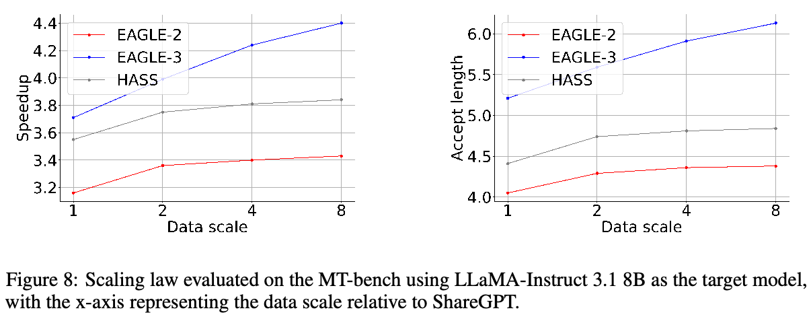
NeurIPS 论文核查清单
本清单旨在鼓励负责任机器学习研究的最佳实践，涵盖可复现性、透明度、研究伦理和社会影响。请勿删除清单：未包含清单的论文将被直接拒稿。清单应置于参考文献及可选的补充材料之后。清单不计入页数限制。
请仔细阅读清单指南，了解如何回答问题。对于每个问题：
- 应回答 [Yes]、[No] 或 [NA]。
- [NA] 表示该问题不适用于本文，或相关信息不可得。
- 请在答案后立即提供简短理由（1–2 句），即使答案为 NA 也一样。
清单答案是论文投稿的组成部分，对审稿人、领域主席、高级领域主席和伦理审稿人可见。论文最终版本中也须包含该清单（必要时修订），其最终版本将随论文发表。
审稿人将把清单作为评估因素之一。虽然 [Yes] 通常优于 [No]，但只要给出恰当理由，回答 [No] 完全可以接受，例如“未报告误差条，因为计算成本太高”或“我们无法找到所用数据集的许可证”。一般来说，回答 [No] 或 [NA] 不构成拒稿理由。虽然问题以二元方式表述，我们承认真正答案往往更细致，因此请依据最佳判断，并通过理由详细说明。所有支持证据都可以出现在正文或附录中的补充材料。如果回答 [Yes]，请在理由中指出相关内容所在章节。
重要提示：
- 删除本说明区块，但保留“NeurIPS Paper Checklist”章节标题。
- 保留以下清单小节标题、问题／答案和指南。
- 不得修改问题，答案仅使用所提供的宏。
1. 主张
问题：摘要和引言中的主要主张，是否准确反映论文贡献与范围？
答案：[Yes]
理由：请见摘要与引言。
指南：
- 回答 NA 表示摘要和引言未包含论文中的主张。
- 摘要和／或引言应清楚陈述主张，包括论文贡献以及重要假设和局限性。对本问题回答 No 或 NA，不会给审稿人留下良好印象。
- 主张应与理论和实验结果相符，反映结果在其他设置下可望推广的程度。
- 可以将愿景性目标作为动机，但必须明确本文尚未实现这些目标。
2. 局限性
问题：论文是否讨论作者工作的局限性？
答案：[Yes]
理由：请见第 6 节。
指南：
- 回答 NA 表示论文没有局限性，回答 No 表示论文有局限性但未讨论。
- 鼓励作者单独设置“局限性”章节。
- 论文应指出所有强假设，并讨论当这些假设不成立时，结果具有多大鲁棒性，例如独立性假设、无噪声设置、模型设定正确、仅局部成立的渐近近似。作者应思考这些假设在实践中可能如何被违反，以及其后果。
- 作者应反思主张的范围，例如方法是否只在少数数据集上或少数运行中测试。一般来说，实证结果往往依赖隐含假设，应明确说明。
- 作者应反思影响方法性能的因素。例如，人脸识别算法可能在低分辨率或低光照图像上表现不佳；语音转文本系统可能因无法处理技术术语，而不能可靠地为在线讲座提供字幕。
- 作者应讨论所提算法的计算效率，以及如何随数据集规模扩展。
- 如适用，作者应讨论方法在解决隐私和公平性问题方面可能存在的局限。
- 作者可能担心如实披露局限会被审稿人视为拒稿理由，但更糟糕的是审稿人发现论文没有承认的局限。作者应依据最佳判断，并认识到个人对透明度的支持，对形成维护社区诚信的规范至关重要。审稿人将被明确要求，不因作者如实披露局限而扣分。
3. 理论假设与证明
问题：对于每项理论结果，论文是否提供完整假设，以及完整且正确的证明？
答案：[NA]
理由：本文不包含理论结果。
指南：
- 回答 NA 表示论文不包含理论结果。
- 所有定理、公式和证明都应编号，并交叉引用。
- 定理陈述中应明确说明或引用所有假设。
- 证明可以出现在正文或补充材料中，但如置于补充材料，鼓励作者提供简短证明概要，帮助形成直观理解。
- 反之，正文中的非正式证明应在附录或补充材料中辅以正式证明。
- 应恰当引用证明所依赖的定理和引理。
4. 实验结果的可复现性
问题：论文是否充分披露复现主要实验结果所需的全部信息，覆盖影响论文主要主张和／或结论的因素（无论是否提供代码和数据）？
答案：[Yes]
理由：见第 4 节。
指南：
- 回答 NA 表示论文不包含实验。
- 如论文包含实验，回答 No 不会给审稿人留下良好印象：使论文可复现很重要，无论是否提供代码和数据。
- 如果贡献是数据集和／或模型，作者应说明使结果可复现或可验证的步骤。
- 根据贡献不同，可通过多种方式实现可复现性。例如，新架构可能只需完整描述架构；具体模型和实证评估可能需让他人使用相同数据集复现模型，或提供模型访问。一般而言，发布代码和数据是一种好方法，也可以通过详细说明复现结果的方法、提供托管模型访问（例如大语言模型）、发布模型 checkpoint，或其他适合研究的方法实现可复现性。
- 虽然 NeurIPS 不要求发布代码，但所有投稿都必须提供合理的可复现途径，具体取决于贡献性质。例如：
- 若主要贡献是新算法，应明确如何复现算法。
- 若主要贡献是新模型架构，应清楚、完整描述架构。
- 若贡献是新模型（例如大语言模型），应提供访问模型以复现结果的方式，或复现模型的方法（例如开源数据集或数据构建说明）。
- 我们承认某些情形下复现较难，欢迎作者说明其具体可复现方式。对于闭源模型，模型访问可能存在限制（例如仅限注册用户），但其他研究者仍应有某种复现或验证结果的途径。
5. 数据与代码的开放访问
问题：论文是否公开数据和代码，并提供充分说明，以忠实复现补充材料所述的主要实验结果？
答案：[Yes]
理由：见补充材料。
指南：
- 回答 NA 表示论文不包含需要代码的实验。
- 更多细节见 NeurIPS 代码和数据提交指南：https://nips.cc/public/guides/CodeSubmissionPolicy。
- 我们鼓励发布代码和数据，但理解这可能无法实现，因此 No 是可接受答案。论文不能仅因不提供代码而被拒，除非代码是贡献的核心（例如新的开源基准）。
- 说明应包含复现结果所需的确切命令和环境。更多细节见 NeurIPS 代码和数据提交指南：https://nips.cc/public/guides/CodeSubmissionPolicy。
- 作者应提供数据访问和准备说明，包括如何访问原始数据、预处理数据、中间数据和生成数据等。
- 作者应提供脚本，复现所提新方法和基线的全部实验结果。如果只能复现部分实验，应说明脚本省略了哪些实验及其原因。
- 投稿时，为保持匿名，应发布匿名版本（如适用）。
- 建议在论文附带的补充材料中提供尽可能多的信息，也允许包含数据和代码的 URL。
6. 实验设置／细节
问题：论文是否说明理解结果所必需的全部训练和测试细节，例如数据划分、超参数、选择方法、优化器类型等？
答案：[Yes]
理由：见第 4 节。
指南：
- 回答 NA 表示论文不包含实验。
- 正文应提供足够的实验设置细节，使读者能够评估并理解结果。
- 完整细节可以随代码提供，也可以置于附录或补充材料。
7. 实验的统计显著性
问题：论文是否报告恰当、正确定义的误差条，或其他适当的实验统计显著性信息？
答案：[No]
理由：本研究领域的实验不包含统计显著性。
指南：
- 回答 NA 表示论文不包含实验。
- 若结果附有误差条、置信区间或统计显著性检验，至少对于支撑主要主张的实验如此，应回答 Yes。
- 应明确说明误差条所捕获的变异因素，例如训练／测试划分、初始化、某参数的随机抽取，或特定实验条件下的整体运行。
- 应说明计算误差条的方法，例如闭式公式、库函数调用或 bootstrap。
- 应说明所作假设，例如误差服从正态分布。
- 应明确误差条表示标准差，还是均值的标准误差。
- 可以报告 1-sigma 误差条，但应予说明。如果未验证正态误差假设，作者最好报告 2-sigma 误差条，而非声称具有 96% 置信区间。
- 对于非对称分布，作者应谨慎，避免在表格或图中使用会导致数值越界的对称误差条，例如出现负错误率。
- 如在表格或图中报告误差条，作者应在正文解释计算方式，并引用相应图表。
8. 实验计算资源
问题：论文是否为每个实验提供足够的计算资源信息，包括计算节点类型、内存、运行时间，以复现实验？
答案：[Yes]
理由：见第 4 节。
指南：
- 回答 NA 表示论文不包含实验。
- 论文应说明计算节点类型，即 CPU 或 GPU、内部集群或云服务提供方，以及相关内存和存储信息。
- 论文应提供各次独立实验运行所需的计算量，并估计总计算量。
- 论文应披露完整研究项目是否消耗了比已报告实验更多的计算，例如未写入论文的初步实验或失败实验。
9. 伦理准则
问题：论文研究是否在所有方面遵守 NeurIPS 伦理准则：https://neurips.cc/public/EthicsGuidelines？
答案：[Yes]
理由：本文所述研究完全符合 NeurIPS 伦理准则。
指南：
- 回答 NA 表示作者未查阅 NeurIPS 伦理准则。
- 如回答 No，应说明需要偏离伦理准则的特殊情形。
- 作者应确保保持匿名，例如其司法辖区法律或法规导致特殊考虑时。
10. 更广泛的影响
问题：论文是否讨论所做工作潜在的正面和负面社会影响？
答案：[Yes]
理由：见第 6 节。
指南：
- 回答 NA 表示该工作没有社会影响。
- 若回答 NA 或 No，应解释为何工作没有社会影响，或为何论文不讨论社会影响。
- 负面社会影响的例子包括潜在的恶意或非预期用途（如虚假信息、生成虚假档案、监控）、公平性考虑（如部署可能对特定群体作出不公平决策的技术）、隐私与安全考虑。
- 会议预期许多论文属于基础研究，不涉及具体应用，更未必部署。然而，若存在直接通向负面应用的途径，作者应指出。例如，可以指出生成模型质量提高可用于制作深度伪造以传播虚假信息。另一方面，无需指出通用神经网络优化算法可能使人们更快训练生成深度伪造的模型。
- 作者应考虑：技术按预期使用且正常运行时可能带来的伤害；按预期使用但产生错误结果时的伤害；以及有意或无意滥用造成的伤害。
- 如存在负面社会影响，作者还可以讨论缓解策略，例如有条件发布模型、同时提供攻击与防御、监控滥用的机制、监控系统如何随时间从反馈中学习的机制，以及改善机器学习效率与可及性。
11. 防护措施
问题：对于滥用风险较高的数据或模型，例如预训练语言模型、图像生成器或抓取数据集，论文是否描述了为负责任发布而设置的防护措施？
答案：[NA]
理由：本文不存在此类风险。
指南：
- 回答 NA 表示论文不存在此类风险。
- 具有高滥用风险或双重用途的模型，发布时应配备必要防护，允许可控使用，例如要求用户遵守使用指南或访问限制，或实施安全过滤器。
- 从互联网抓取的数据集可能存在安全风险。作者应描述如何避免发布不安全图像。
- 我们承认有效防护具有挑战性，许多论文也不需要，但鼓励作者考虑这一点并尽最大善意努力。
12. 现有资源的许可证
问题：论文所用资源，例如代码、数据和模型的创建者或原始所有者，是否得到恰当署名？许可证及使用条款是否被明确提及并恰当遵守？
答案：[Yes]
理由：见第 4 节。
指南：
- 回答 NA 表示论文未使用现有资源。
- 作者应引用产生代码包或数据集的原始论文。
- 作者应说明所用资源的版本，并尽可能提供 URL。
- 每项资源应包含许可证名称，例如 CC-BY 4.0。
- 对于从特定来源（例如网站）抓取的数据，应提供该来源的版权与服务条款。
- 如发布资源，应提供包中的许可证、版权信息和使用条款。对于常用数据集，paperswithcode.com/datasets 整理了部分数据集的许可证；其许可指南可帮助确定数据集许可证。
- 对于重新打包的现有数据集，应同时提供原始许可证，以及派生资源许可证（如有变化）。
- 如这些信息无法在线获得，鼓励作者联系资源创建者。
13. 新资源
问题：论文引入的新资源是否有充分文档，文档是否随资源提供？
答案：[NA]
理由：本文不发布新资源。
指南：
- 回答 NA 表示论文不发布新资源。
- 研究者应通过结构化模板，将数据集／代码／模型细节作为投稿一部分提供，包括训练、许可证、局限性等。
- 论文应讨论是否以及如何取得资源所属人员的同意。
- 投稿时，请记得将资源匿名化（如适用）。可以创建匿名 URL，或附上匿名 zip 文件。
14. 众包与人类受试者研究
问题：对于众包实验和人类受试者研究，论文是否包含给予参与者的完整说明、适用时的截图，以及报酬详情（如有）？
答案：[NA]
理由：本文不涉及众包或人类受试者研究。
指南：
- 回答 NA 表示论文不涉及众包或人类受试者研究。
- 这些信息可以放入补充材料，但如果论文主要贡献涉及人类受试者，正文应提供尽可能多的细节。
- 根据 NeurIPS 伦理准则，参与数据收集、整理或其他工作的人员，应至少获得数据收集者所在国家的最低工资。
15. 人类受试者研究的机构审查委员会（IRB）批准或同等批准
问题：论文是否描述研究参与者可能承受的风险、是否向受试者披露这些风险，以及是否获得机构审查委员会（IRB）批准（或根据所在国家／机构要求获得同等批准／审查）？
答案：[NA]
理由：本文不涉及众包或人类受试者研究。
指南：
- 回答 NA 表示论文不涉及众包或人类受试者研究。
- 视研究所在国家而定，任何人类受试者研究可能需要 IRB 或同等批准。如果已获 IRB 批准，应在论文中明确说明。
- 我们承认，不同机构和地区的流程可能差异很大，期望作者遵循 NeurIPS 伦理准则及所属机构指南。
- 首次投稿时，不应包含破坏匿名性的信息（如适用），例如执行审查的机构。
16. LLM 使用声明
问题：若 LLM 是本研究核心方法中重要、原创或非标准的组成部分，论文是否描述其使用？请注意，如果 LLM 仅用于写作、编辑或格式处理，不影响核心方法、科学严谨性或研究原创性，则无需声明。
答案：[NA]
理由：本研究核心方法开发未将 LLM 用作重要、原创或非标准组成部分。
指南：
- 回答 NA 表示本研究核心方法开发未将 LLM 用作重要、原创或非标准组成部分。
- 有关哪些内容应当或不应当描述，请参阅 LLM 政策：https://neurips.cc/Conferences/2025/LLM。